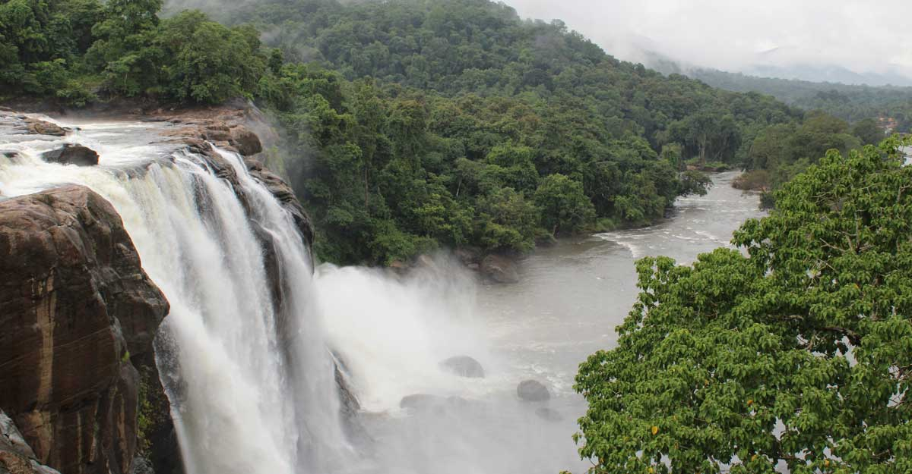

Thrissur formerly Trichur, also known by its historical name Thrissivaperur, is a city and the headquarters of the Thrissur district in Kerala, India. It is the third largest urban agglomeration in Kerala after Kochi and Kozhikode, and the 21st largest in India. The city is built around a 65-acre (26 ha) hillock called the Thekkinkaadu Maidaanam which seats a large Hindu Shiva Temple. It is located central of the state, and 304 kilometres (189 mi) north-west of the state's capital city, Thiruvananthapuram. Thrissur was once the capital of the Kingdom of Cochin, and was a point of contact for the Assyrians, Greeks, Persians, Arabs, Romans, Portuguese, Dutch and English.
TOP DESTINATIONS
Vadakkunnathan Temple
The Vadakkunnathan temple is a classical example of the architectural style of Kerala and has one monumental tower on each of the four sides in addition to a koothambalam. Mural paintings depicting various scenes from the Mahabharata can be seen inside the temple.

Athirapilly Waterfalls
Athirapilly Falls is situated in Athirapilly Panchayat in Chalakudy Taluk of Thrissur District in Kerala, India on the Chalakudy River, which originates from the upper reaches of the Western Ghats at the entrance to the Sholayar ranges.

Koodalmanikyam Temple
Koodalmanikyam Temple is a Hindu temple in Irinjalakuda Municipality, Thrissur district, Kerala, India .[1] The temple comprises a main structure, a walled compound with citadels, and four ponds around the main structure one of which is within the walls.

Chavakkad Beach
Chavakkad Beach is a beach in Chavakkad Municipality of Thrissur District in the Indian state of Kerala. It lies on the Arabian Sea coast and attracts tourists. The beach is situated 5 Kilometers from Guruvayoor Temple Sri Krishna Temple. At this beach the river meets the sea forming an estuary.